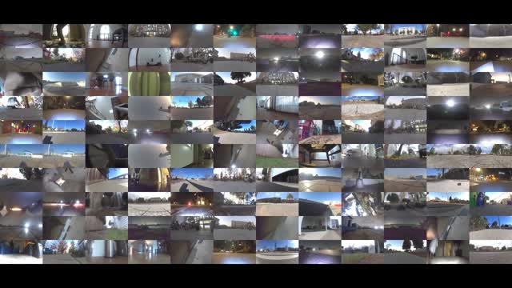
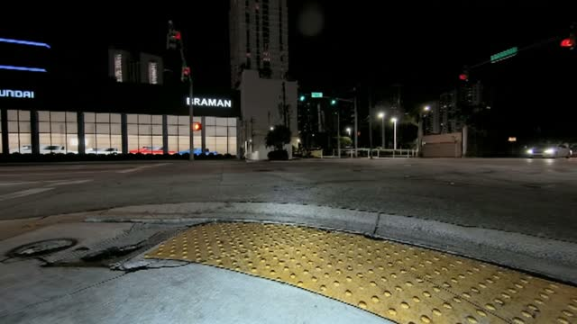
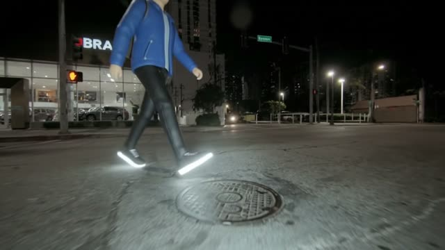
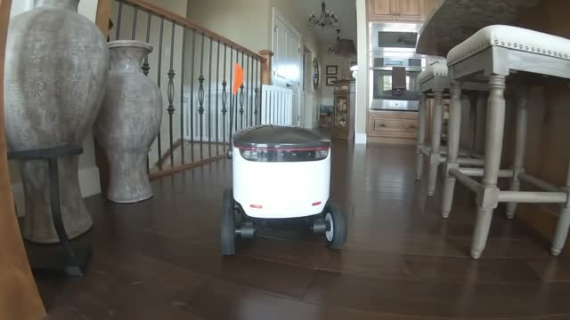

Hindsight · built with Gemini 4 Argon
Federated Robot Learning
Every robot failure makes the fleet smarter.
50 h
real robot video scanned
100%
accuracy, confirmed by a human
0→100%
success after Argon's fix

Finds failures

Photoreal twin

What if?

Fixed, approved